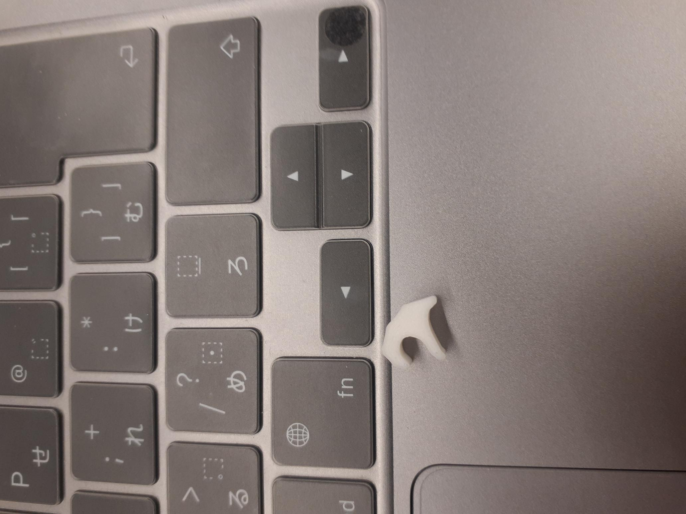

第1回デジタルファブリケーション作品
作品タイトル：美少女の指ハートピンセット
【構想図】

【完成作品】

【設計ファイル】
stlファイル
【作品説明】
美少女の手を模した作品。
人の脳に焼きついて離れないような、
人の心を"つかむ"ような「天才的なアイドル様」の、
手を模した作品。しかし、実際には手が頑丈すぎて動かず、
何も掴めないピンセットとなった。
おまけに小さいので私自らつかむことも難しい、
高嶺の花のようなピンセットとなった。
しかし、これが誰かの記憶にとどまり続けることができたなら、
その時こそ、ある種つかめるピンセットとなるかもしれない。
【製作理由】
私には今の流通しているピンセットがあまりに洗練されているので、
何かを付け足そうと考えた。そこで可愛くて面白いピンセットを目指した。
【製作プロセス】
はじめ製作を考えていたものはこのような形。

等身大の上半身美少女像と記念写真が撮れるようなものにしようと考えていた。
しかし、サイズ的に非現実的かつ単純に縮尺を小さくしても指が表現されないと思い、
これ以上大きくすると規定からも外れてしまうことから断念。
次に製作したものが完成作品となった。サイズは1cm×1cm×1cmほどである。